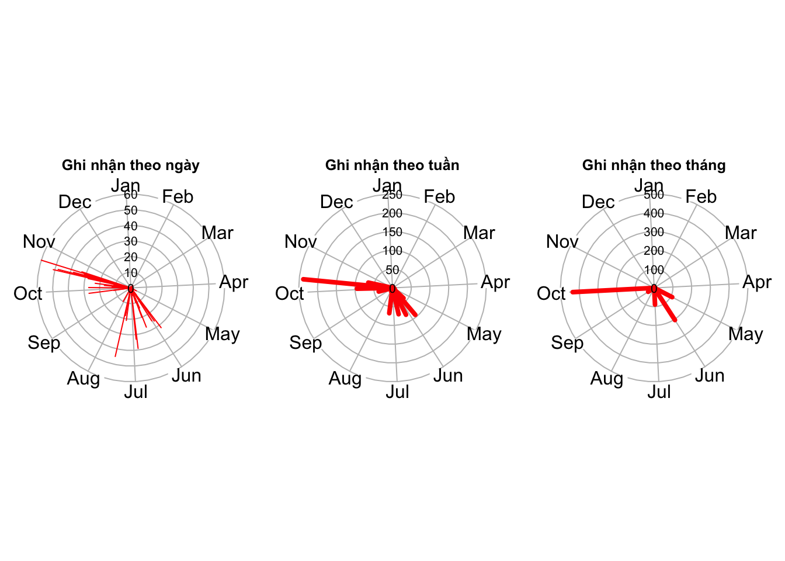
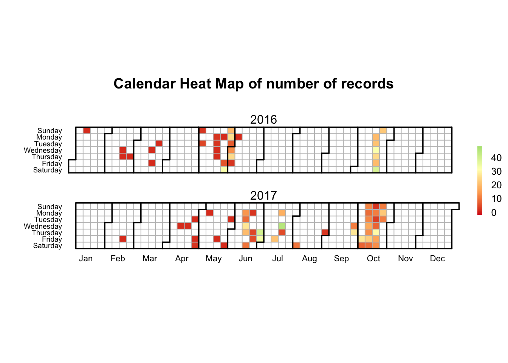
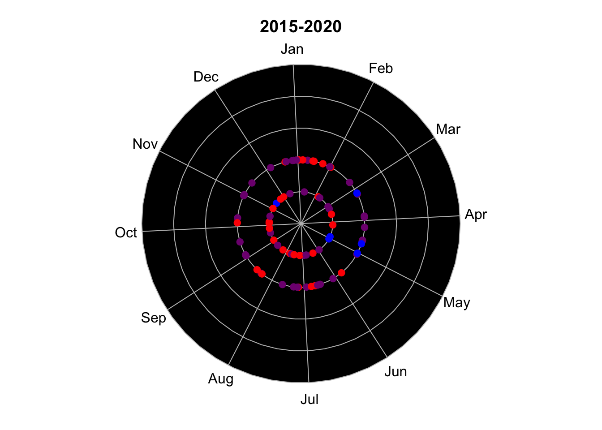
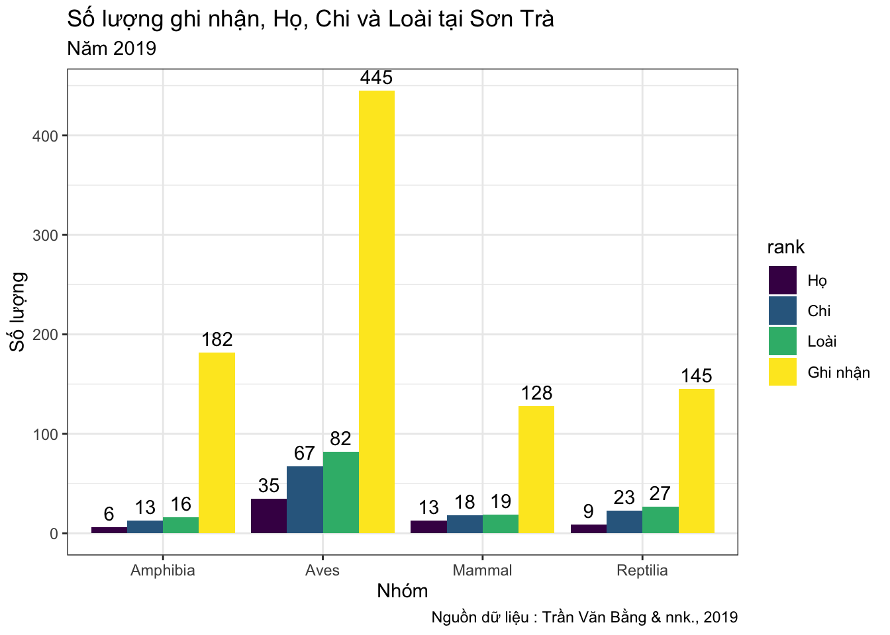
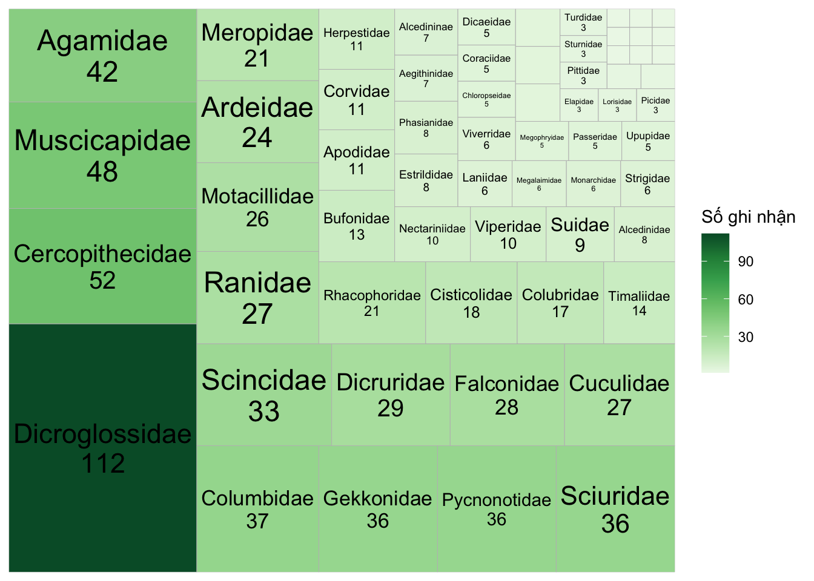

Phần 1 Một số thao tác cơ bản đối với dữ liệu đa dạng sinh học
Ở nội dung này, chúng ta sẽ sử dụng thêm gói tidyverse bên cạnh các lệnh sẵn có trong R. Tidyverse là một bộ công cụ gồm nhiều gói lệnh khác nhau nhằm mục đích xử lý dữ liệu một cách dễ dàng và nhất quán. Các bạn có thể tìm hiểu thêm bộ công cụ này tại https://www.tidyverse.org/.
1.1 Dữ liệu
Thực hành với bộ dữ liệu về thông tin Đa dạng Sinh học tại Bán đảo Sơn Trà được Trần Văn Bằng & nnk. công bố năm 2019. Thông tin chi tiết về dữ liệu được trình bày tại tài liệu:
Tran BV, Le D, Hoang HQ, Hoang DM (2019) Occurrence data of terrestrial vertebrates of Son Tra Peninsula, Da Nang City, Vietnam. Biodiversity Data Journal 7: e39233. https://doi.org/10.3897/BDJ.7.e39233
1.2 Đọc dữ liệu
Sử dụng lệnh read.csv() để mở tập tin “*.csv” đã tải từ nguồn tài liệu và lưu với tên “sontra”
1.3 Thao tác cơ bản trên dữ liệu
1.3.1 Xem số lượng dòng và cột
Đếm số lượng dòng và cột của bộ dữ liệu với lệnh dim(). Kết quả cho biết dữ liệu hiện có 900 hàng và 34 cột. Có thể sử dụng nrow() cho việc đếm riêng số lượng dòng, và ncol() để đếm riêng số lượng cột.
## [1] 900 34## [1] 900## [1] 34Xem danh sách tên trường thông tin của bảng với lệnh colnames()
## [1] "occurrenceID" "basisOfRecord"
## [3] "eventDate" "year"
## [5] "month" "day"
## [7] "verbatimEventDate" "scientificName"
## [9] "kingdom" "phylum"
## [11] "class" "order"
## [13] "family" "genus"
## [15] "specificEpithet" "taxonRank"
## [17] "scientificNameAuthorship" "identifiedBy"
## [19] "dateIdentified" "decimalLatitude"
## [21] "decimalLongitude" "geodeticDatum"
## [23] "verbatimCoordinateSystem" "continent"
## [25] "country" "countryCode"
## [27] "stateProvince" "county"
## [29] "locality" "language"
## [31] "institutionCode" "collectionCode"
## [33] "individualCount" "preparations"1.3.2 Lọc dữ liệu theo cột
Bảng dữ liệu này chứa nhiều trường thông tin mà chúng ta chưa cần sử dụng. Chúng ta có thể tạo một bảng mới chỉ chứa một số cột quan tâm với lệnh select() và lưu với tên “sontra2” như sau:
sontra2 <- sontra |>
select(class, family, genus, specificEpithet,eventDate,year)
# xem 5 dòng đầu tiên trong bảng
sontra2 |> head(5)Bên cạnh việc chọn theo tên trường cụ thể, chúng ta có thể chọn theo một số cách sau:
Chọn từ cột “class” đến cột “genus”
Chọn từ cột thứ 11 đến cột thứ 14
Chọn 6 cột đầu tiên nhưng trừ cột “eventDate”
Chọn tất cả các cột bắt đầu bởi ký tự nào đó
Chọn tất cả các cột có chứa ký tự nào đó
1.3.3 Trích lọc theo dòng trong bảng.
Để trích lọc thông tin theo dòng trong bảng ta sử dụng lệnh filter() kết hợp với các ký hiệu điều kiện như sau:
x < y: nhỏ hơn
x > y: lớn hơn
x == y: bằng hoặc giống
x <= y: nhỏ hơn hoặc bằng
y >= y: lớn hơn hoặc bằng
x != y: khác
x %in% y: là một phần tử trong
is.na(x): là NA
!is.na(x): không là NA
Ví dụ: Ta cần lọc ra các dòng ghi nhận của các loài thuộc Họ Tắc kè (Gekkonidae) dựa trên cột “family” của bảng.
Ví dụ: Lọc ra các ghi nhận của cả hai họ “Colubridae” và “Elapidae”. Ta kết hợp thêm lệnh %in% trong hàm filter() như sau:
Kết quả ta có 20 dòng chứa thông tin về hai họ “Colubridae” và “Elapidae” trong bộ dữ liệu.
Ta cũng có thể sử dụng ký hiệu & (và), | (hoặc) để đưa thêm vào các điều kiện lọc khác. Ví dụ lọc ra các dòng của hai họ “Colubridae” và “Elapidae” được ghi nhận trong năm 2016:
1.3.4 Sắp xếp dữ liệu
Sử dụng lệnh arrange() để sắp xếp dữ liệu dựa trên các cột quan tâm. Khi đó các dòng sẽ được sắp theo trật tự bảng chữ cái đối với chữ và từ nhỏ đến lớn đối với số.
Ví dụ: Sắp bảng theo trật tự bảng chữ cái các Chi ở cột “genus”:
Nếu muốn đảo chiều, kết hợp thêm lệnh desc() trong lệnh arrange() như sau:
1.4 Thống kê số lượng
1.4.1 Cách 1 với các lệnh từ gói Tidyverse
Để đếm số lượng ghi nhận, số lượng họ, chi và loài trong bộ dữ liệu ta có thể sử dụng lệnh summarise() với cú pháp như sau: lệnh n() để đếm tổng số dòng, còn n_distinct() để đếm số dòng có giá trị khác nhau trong một cột nào đó.
sontra |>
summarise(
tong_so_ho = n_distinct(family),
tong_so_chi = n_distinct(genus),
tong_so_loai = n_distinct(scientificName),
tong_so_ghi_nhan = n()
)## # A tibble: 1 × 4
## tong_so_ho tong_so_chi tong_so_loai tong_so_ghi_nhan
## <int> <int> <int> <int>
## 1 63 121 144 900Kết quả cho thấy trong bộ dữ liệu có tổng cộng 900 ghi nhận của 144 loài, 121 chi và 63 họ.
Để thống kê số lượng tương tự nhưng riêng cho từng nhóm Thú, Lưỡng cư, Bò sát và Chim thì kết hợp thêm lệnh group_by() như sau:
sontra |>
group_by(class) |>
summarise(tong_so_ho = n_distinct(family),
tong_so_chi = n_distinct(genus),
tong_so_loai = n_distinct(scientificName),
tong_so_ghi_nhan = n())## # A tibble: 4 × 5
## class tong_so_ho tong_so_chi tong_so_loai tong_so_ghi_nhan
## <chr> <int> <int> <int> <int>
## 1 Amphibia 6 13 16 182
## 2 Aves 35 67 82 445
## 3 Mammal 13 18 19 128
## 4 Reptilia 9 23 27 145Số lượng ghi nhận, loài chi họ đã được đếm theo từng nhóm sinh vật.
Bên cạnh đó, có thể sử dụng lệnh count() để đếm số ghi nhận theo nhóm động vật như sau:
## # A tibble: 4 × 2
## class n
## <chr> <int>
## 1 Amphibia 182
## 2 Aves 445
## 3 Mammal 128
## 4 Reptilia 145Hoặc kết hợp hàm arrange() và top_n() để tìm 5 loài có số ghi nhận nhiều nhất
## # A tibble: 5 × 2
## scientificName n
## <chr> <int>
## 1 Fejervarya limnocharis (Gravenhorst, 1829) 75
## 2 Pygathrix nemaeus (Linnaeus, 1771) 35
## 3 Limnonectes poilani (Bourret, 1942) 29
## 4 Cyrtodactylus pseudoquadrivirgatus Rösler, Nguyen, Vu, Ngo & Ziegler, 2… 28
## 5 Physignathus cocincinus Cuvier, 1829 22Kết quả loài Fejervarya limnocharis (Gravenhorst, 1829) được ghi nhận nhiều nhất, lên đến 75 lần.
1.4.2 Cách 2 sử dụng gói lệnh bdvis
Để sử dụng các lệnh từ gói bdvis, ta cần phải đổi tên một số cột quan trọng của bảng sontra liên quan đến tên khoa học, thời gian và tọa độ ghi nhận đồng thời chuyển định dạng sang định dạng bảng của gói này với lệnh format_bdvis().
sontra_bdvis <- sontra |>
rename(
"Latitude" = "decimalLatitude",
"Longitude" = "decimalLongitude",
"Scientific_name" = "scientificName",
"Family" = "family",
"Genus" = "genus") |>
mutate(Date_collected=paste(year,month,day,sep = "-")) |>
format_bdvis()Khi đó sử dụng lệnh bdsummary()để thống kê số lượng. Kết quả sẽ trả về số ghi nhận, số lượng Họ, Chi, Loài, thời gian ghi nhận trong bộ dữ liệu.
##
## Total no of records = 900
##
## Temporal coverage...
## Date range of the records from 2016-01-10 to 2017-10-24
##
## Taxonomic coverage...
## No of Families : 63
## No of Genus : 121
## No of Species : 144
##
## Spatial coverage ...
## Bounding box of records 16.098 , 108.2236 - 16.1535 , 108.3361
## Degree celles covered : 1
## % degree cells covered : InfTa cũng có thể xem thông tin cho các ghi nhận về nhóm Thú như sau:
##
## Total no of records = 128
##
## Temporal coverage...
## Date range of the records from 2016-05-28 to 2017-10-24
##
## Taxonomic coverage...
## No of Families : 13
## No of Genus : 18
## No of Species : 19
##
## Spatial coverage ...
## Bounding box of records 16.099 , 108.2236 - 16.152 , 108.3361
## Degree celles covered : 1
## % degree cells covered : Inf1.5 Biểu đồ
1.5.1 Vẽ nhanh một số biểu đồ với gói bdvis
1.5.1.1 Số lượng ghi nhận theo ngày, tuần, tháng trong năm
par(mfrow = c(1,3))
tempolar(sontra_bdvis,
color="red", title="Ghi nhận theo ngày",
plottype="r", timescale="d")
tempolar(sontra_bdvis,
color="red", title="Ghi nhận theo tuần",
plottype="r", timescale="w")
tempolar(sontra_bdvis,
color="red", title="Ghi nhận theo tháng",
plottype="r", timescale="m") 
1.5.1.2 Calendarheat - Số lượng ghi nhận theo ngày
Biểu đồ thể hiện số lượng ghi nhận theo ngày. Trong đó mỗi ô vuông là một ngày, màu sắc của ô thể hiện số lượng ghi nhận từ ít đến nhiều theo gam màu từ đỏ đến xanh lá.

1.5.1.3 Chronohorogram - Số lượng ghi nhận theo tháng và năm
Biểu đồ này thể hiện số lượng ghi nhận theo tháng và năm. Ta có thể quy định năm bắt đầu và năm kết thúc sự theo dõi. Khi đó tâm đồ thị thể hiện cho năm bắt đầu, sau đó mỗi năm tiếp theo được thể hiện bởi 1 vòng tròn. Một điểm thể hiện cho một ngày ghi nhận dữ liệu. Màu sắc mặc định được thể hiện số ghi nhận trong ngày từ ít đến nhiều bằng gam màu từ xanh dương đến đỏ.

1.5.2 Số lượng ghi nhận với gói lệnh GGPLOT2
Đếm số lượng theo từng nhóm
df_soluong <- sontra |>
group_by(class) |>
summarise(Ho = n_distinct(family),
Chi = n_distinct(genus),
Loai = n_distinct(scientificName),
Ghi_nhan = n())Chuyển đổi bảng sang định dạng tidy, đây là cấu trúc dữ liệu được xem là cấu trúc gọn gàng dễ thao tác, thực hiện các phân tích mô hình hóa và trực quan hóa. Kiểu dữ liệu này có cấu trúc: mỗi biến là một cột, mỗi quan sát là một hàng và mỗi loại đơn vị quan sát là một bảng. Xem thêm thông tin về định dạng tidy tại đây: https://cran.r-project.org/web/packages/tidyr/vignettes/tidy-data.html
df_soluong <- df_soluong |>
tidyr::pivot_longer(-class, names_to = "rank", values_to = "n") |>
mutate(rank = factor(rank,
levels = c("Ho","Chi","Loai","Ghi_nhan"),
labels = c("Họ","Chi","Loài","Ghi nhận")))Tiến hành vẽ biểu đồ thể hiện số lượng về ghi nhận, họ, chi và loài cho từng nhóm sinh vật
ggplot(df_soluong, aes(x = class, y = n, fill = rank)) +
geom_col(position = position_dodge()) +
geom_text(aes(x = class, y = n, label = n ),
position = position_dodge(width = 0.9),
vjust = -0.5) +
scale_fill_viridis_d() +
theme_bw() +
labs(title = "Số lượng ghi nhận, Họ, Chi và Loài tại Sơn Trà",
subtitle = "Năm 2019",
x = "Nhóm", y = "Số lượng",
caption = "Nguồn dữ liệu : Trần Văn Bằng & nnk., 2019")
1.5.3 Biểu đồ treemap thể hiện số lượng ghi nhận theo họ.
Chúng ta có thể sử dụng lệnh geom_treemap() từ gói treemapify kết hợp với gói ggplot2 để vẽ biểu đồ treemap.
# Gọi gói lệnh
library(treemapify)
# Đếm số lượng ghi nhận theo họ
spByFam <- sontra |> count(family)
# Vẽ biểu đồ
ggplot(spByFam, aes(area = n, fill = n, label = paste(family, n, sep = "\n"))) +
geom_treemap(start = "bottomleft") +
geom_treemap_text(place = "centre") +
scale_fill_distiller(palette = "Greens", direction = 1) +
labs(fill = "Số ghi nhận")
ggplot2 là gói lệnh rất mạnh cho việc hình ảnh hoá dữ liệu với nhiều kiểu biểu đồ khác nhau. thông tin và hướng dẫn sử dụng có thể xem tại https://ggplot2.tidyverse.org/. Từ cấu trúc gói lệnh này, nhiều tác giả khác nhau đã phát triển thêm nhiều gói lệnh phục vụ cho những kiểu biểu đồ chuyên biệt, có thể xem thêm tại đây: https://exts.ggplot2.tidyverse.org/gallery/